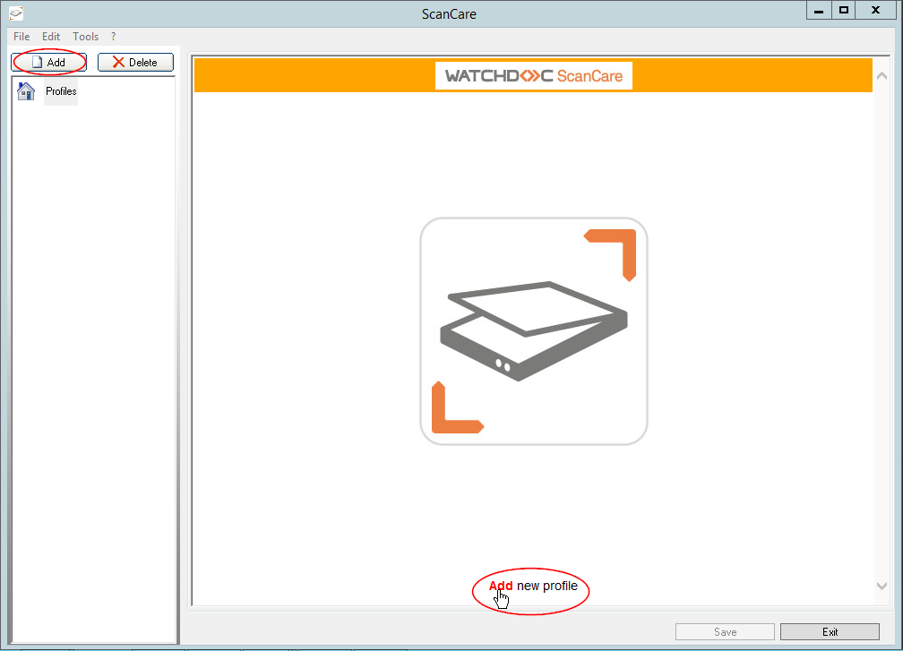
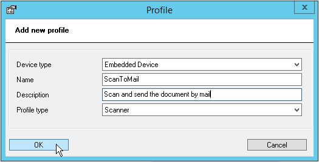
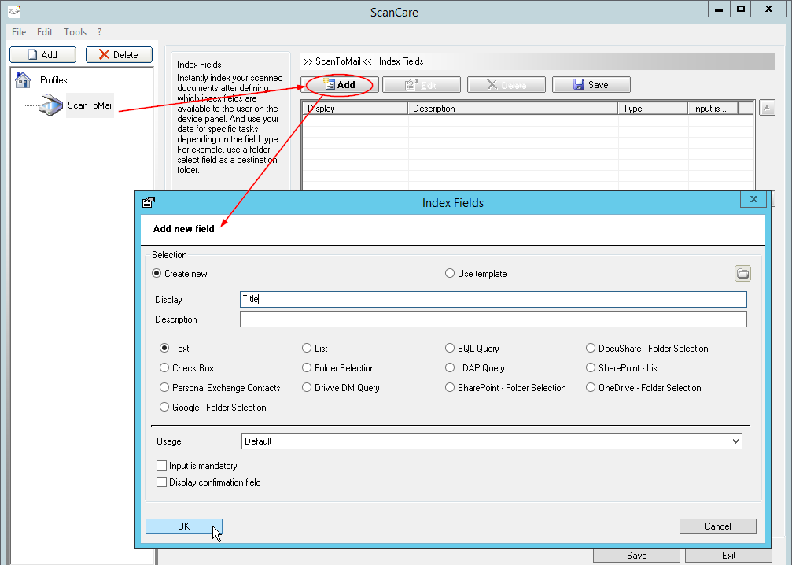
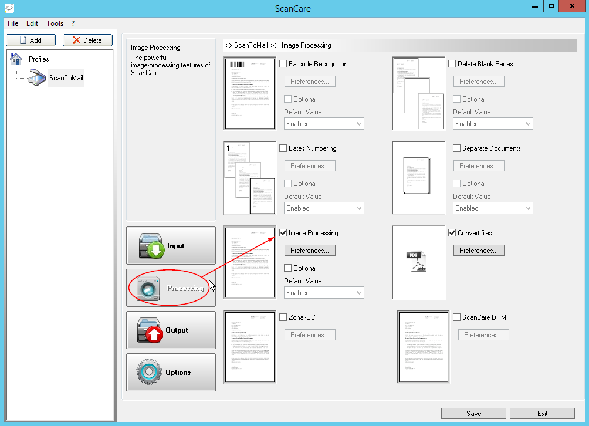
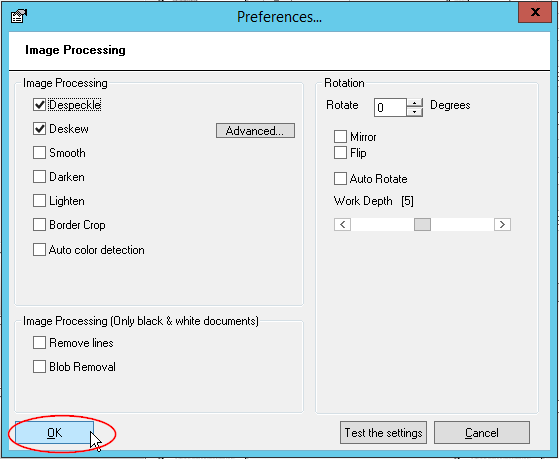
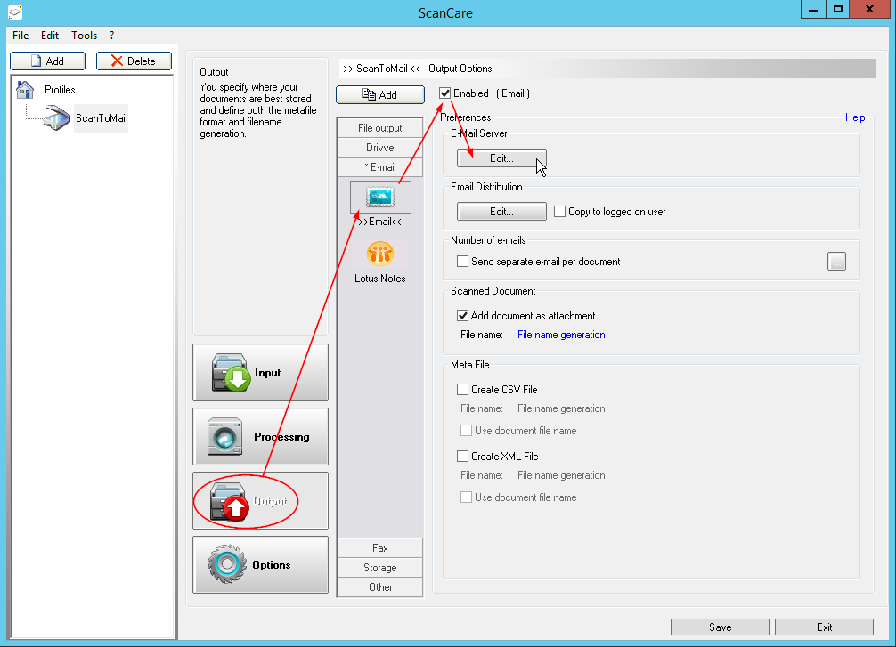
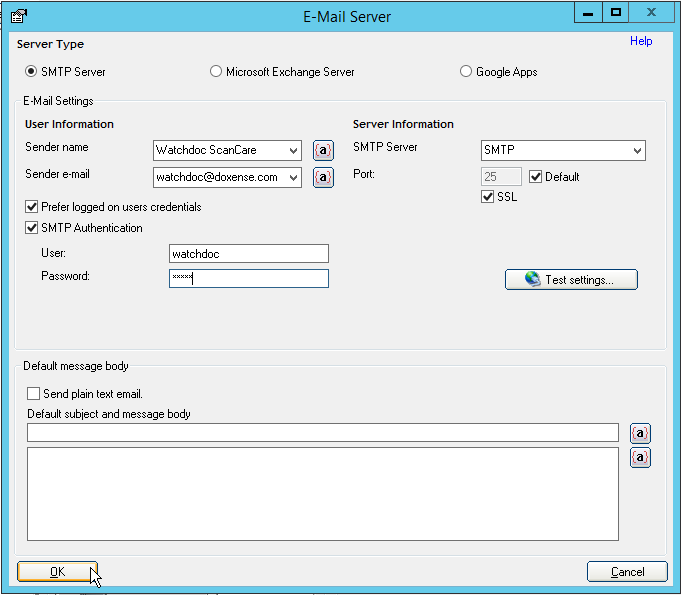
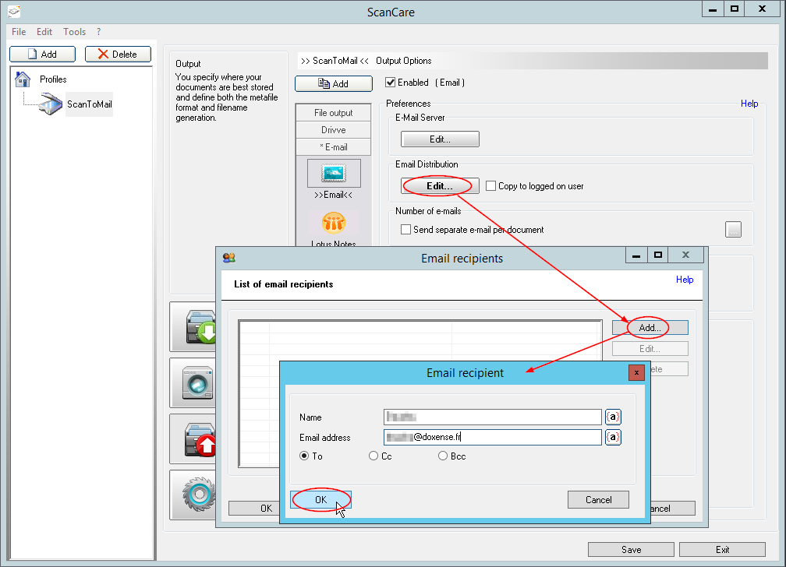
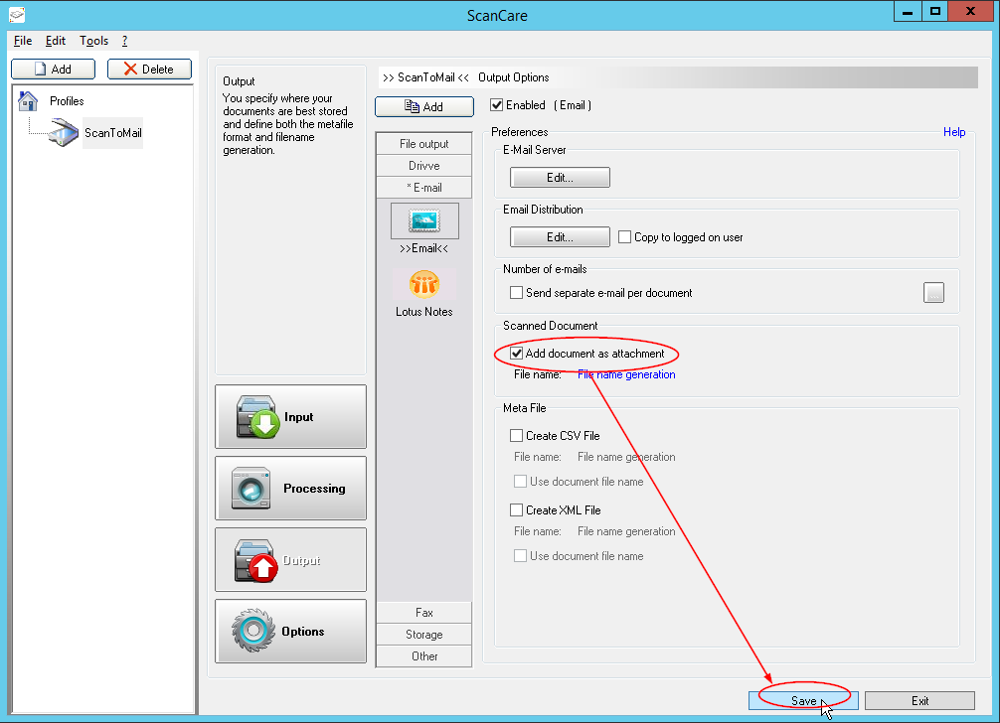
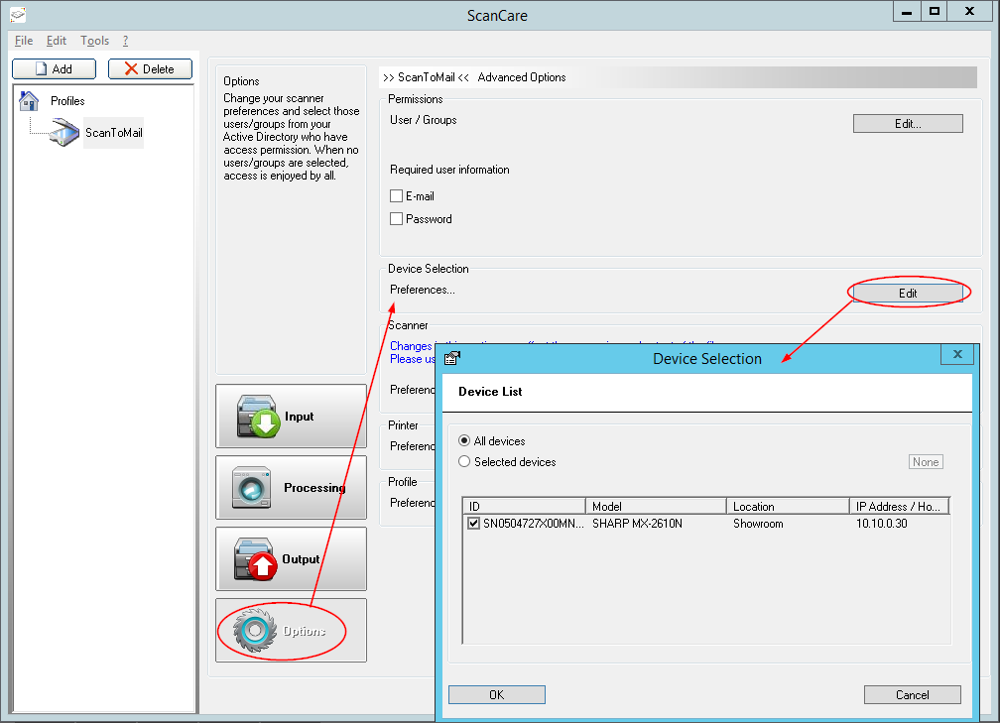

Watchdoc ScanCare - Configuring a scanning profile - Procedure
Configuring a profile test for validation
The following procedure describes how to quickly setup a profile and assign it to a device to quickly validate the proper operation of Watchdoc ScanCare. It does not describe all of the setup options offered by the solution.
The profile that is configured to test the solution should allow scanning documents, cleaning them (Despeckle) and straightening them (Deskew) before sending to a preset e-mail address (e.g. yours).
Creating a profile
-
From the Watchdoc ScanCare setup interface, click on the Add button located above the list of profiles or at the bottom of the main window:

-
From the Profiles dialogue box that is displayed, choose the Embedded Device type and configure it:
-
Name: Enter the name assigned the profile: "ScanToMail", for example. As this name is displayed on the device's display, the number of characters is limited,
-
Description:If necessary, complete the name by entering a summary description: "Scan and send the document by mail", for example. As this description is displayed on the device's display, the number of characters is limited,
-
ProfileType : From the list, choose the type of profile:
-
scanner : allows to scan the submitted document after first applying various kinds of processing to it.
-
-
Click on the OK button to create the profile.

→The profile that is created is displayed on the left in the profiles column.
Configuring the profile
Click on the profile displayed in the left hand column to access its setup interface. The window that is opened by default is the one for setting up the index fields.
Setting up an index field
-
From the right hand Index field, click on the Add button.
-
From the Add new field window, enter the "Title" in the Display field.
-
Retain the Text type.
-
In the Usage section, select Default.
-
Tick the Input is mandatory box.
-
Click on the OK button to save the new field :

Configuring the processing
Configure the one or more processing functions to apply to the profile:
-
click on the Processing button;
-
Tick the Iimage Processing box and click on the Preferences button ;

-
In the Preferences>Image processing box, tick the Despeckle and Deskew boxes.
-
Click on the OK button to save the processing applied to the scanned documents.
-
Click on the Test the settingsbutton to confirm the processing.

Configuring the output
-
Configure the format that the scanned documents will be converted to, namely an e-mail message sent to a preset address:
-
Click on the Output button;
-
From the Output types menu offered, click on the Email section, then on the Email button;
-
Tick the Enabled box,
-
From the E-mail Server section, click on the Edit button to access the setting interface,

-
-
From the E-Mail Server>Server Type settings interface, keep the SMTP Server box ticked by default;
-
Configure the E-Mail Settings section:
-
Enter the e-mail Sender name (or sender department);
-
Enter the Sender e-mail address (or sender department);
-
Enter the SMTP Server adress;Enter the Port number (if it is different from the default port) and thick the box if the port is secured by SSL protocol;
-
Tick the Prefer logged on users credentials box to use the user's connection credentials to authenticate them with the SMTP server
-
Tick the SMTP Authentication box and fill-in the following fields to designate the user allowed to access the SMTP server:
-
Enter the User name allowed to connect to the SMTP server
-
Enter the Password for the user allowed to connect to the SMTP server.
-
Click on the OK button to save the e-mail server settings.

-
From the Preferences > Email Distribution interface, click on the Edit button,
-
From the list of E-mail Distribution addresses, click on the Add button, ;
-
From the recipient's E-mail Distribution box, fill-in the following fields:
-
Name: Enter the name of the recipient (or group of recipients) for the e-mail ;
-
Email address: Enter the e-mail address of the preset recipient (or group of recipients) for the e-mail message;
-
Opt for A, CC ou Bcc depending on the role played by the recipient;

-
From the Preferences > Scanned Document interface, tick the Add document as an attachment box;
-
Click on the Save button to save your e-mail output.

Assigning the profile to a device
Once the profile is created, you need to make it available to users on one (or more) of the device(s) in your installation.
-
Click on the Options button.
-
From the Device Selection section, click on the Edit button;
-
From the Devices List, select the one or more devices you wish to assign the profile to;
-
Click on the OK button to save the profile assigned to the device.

Testing the Watchdoc ScanCare service.
Once the profile is assigned to a device, you can test the Watchdoc ScanCare service from the device
Login to the device,
-
From the screen on this device, select the ScanCare service
 (the interface seen by the user will vary with the brand of the device),
(the interface seen by the user will vary with the brand of the device), -
From the form displayed on the screen on the device, enter the title of the document you wish to scan and send by e-mail,
-
Start scanning your document;
-
Receive the document in the preset e-mail mailbox;
-
If the profile is correctly setup, you will receive the scanned document by e-mail.